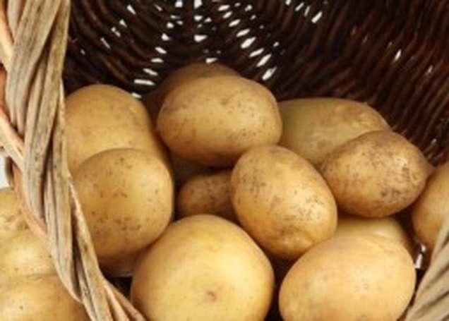
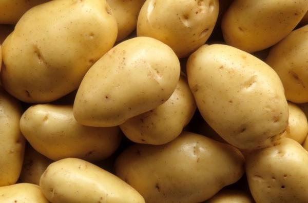
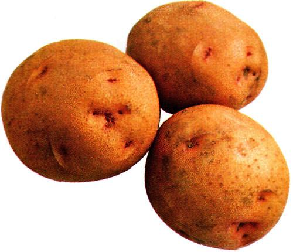

Обычный картофель
Карто́фель, или Паслён клубнено́сный (лат. Solánum tuberósum), — вид многолетних клубненосных травянистых растений из рода Паслён (Solanum) семейства Паслёновые (Solanaceae). Клубни картофеля являются важным пищевым продуктом. Плоды ядовиты в связи с содержанием в них соланина.Современное научное название картофеля в 1596 году ввёл Каспар Баугин[3] в работе «Theatri botanici», позже этим названием воспользовался Линней в своей работе «Species Plantarum»[4] (1753). В разное время другими авторами публиковались иные научные названия, которые теперь составляют синонимику вида картофель.

Вятка
Вятка. Картофель 'Вятка' — сорт, полученный на Фаленской селекционной станции. Урожайность высокая. Вкусовые качества средние. Клубни белые, с кремовым оттенком, округлые, крупные, массой 90—140 г. Мякоть белая, не темнеющая при резке. Содержание крахмала 13—17%. Клубни слабо развариваются. Лежкость клубней в период зимнего хранения хорошая. Устойчив к раку. Относительно устойчив к вирусным болезням. При высоких урожаях клубни склонны к растрескиванию.

Домодедовский
Сорт довольно популярный на всей европейской части России. Ценится за раннеспелость, по вегетационному периоду он имеет преимущество перед поздними сортами почти в полтора месяца. При этом урожайность достаточно высокая. Клубни имеют замечательные вкусовые показатели. Цвет кожицы белый, средняя масса клубней 100 г, на плодородных почвах они становятся более крупными. Положительно отзывается на дополнительные рыхления. На разрезе мякоть белоснежная, не темнеет, глазков немного. На одном кусте завязывается до 14–16 клубней. Их масса зависит от особенностей сорта и уровня агротехники: чем выше уровень агротехники, сорт устойчивее клубни к поражению фитофторозу и грибными заболеваниями. Домодедовский не любит почвы с тяжелым механическим составом, с низким содержанием гумуса и минеральных макроэлементов..

s